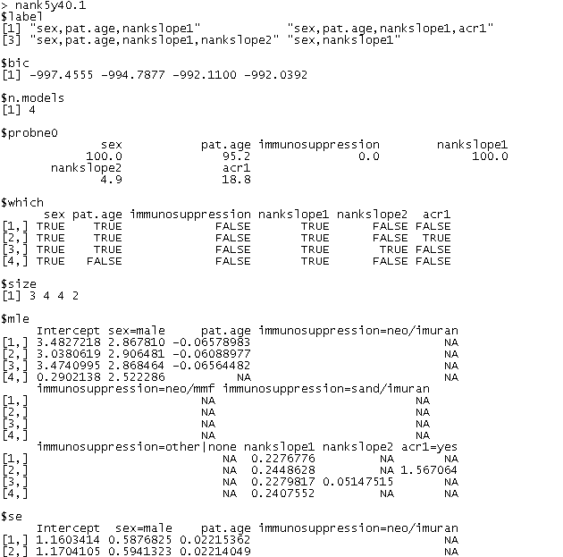

Clinician's
corner
|
|
|
Back to main page
|
Programmer's
corner
|
|
So, you use WinBUGS a lot?
Want more?
|
Patrick Blisle
Division of Clinical Epidemiology
McGill University Health Center
Montreal, Quebec CANADA
patrick.belisle@rimuhc.ca
Last modification: 6 apr 2016
|
|
|
Version 1.6 (April 2016)
bic.process
[R] Cleaning and adding to BIC outputs
| [ |
bic.process is an R function developped to process the output from functions bic.glm, bicreg and bic.surv.
It takes exp() of mle's to get odds ratios in logistic regression or hazard rates in survival models and
returns confidence intervals for mle's (as well as for exponentiated mle's, when indicated).
Moreover, it discards incomplete high-order models.
|
] |
Menu
Top
Syntax
bic.process(bic.out,
data,
n = nrow(data),
report.ci = T,
ci.level = 0.95,
report.or = bic.out.family=="binomial",
report.rate.ratio = bic.out.family=="poisson",
report.hazard.ratio = bic.fct=="surv",
report.r2 = bic.out.family=="gaussian",
notes = NULL,
formula = character(0),
discard.incomplete.models = T,
mixed.interactionterms.factor.type = bic.out.factor.type,
recode.absent.var.value.as.na=T,
n.events=integer(0))
Top
bic.process arguments
| bic.out |
The output from a bic.glm(), bicreg or bic.surv() call.
|
| data |
the independent variables data matrix used in bic.glm, bicreg or bic.surv call;
it may also include outcome variable.
|
| n |
Sample size.
Default value is ok for bic.glm and bicreg outputs.
|
| report.ci |
Logical. Whether or not confidence intervals for regression parameters
should be returned in output.
|
| ci.level |
Confidence interval level.
Default is 0.95.
|
| report.or |
Logical. Whether or not point estimates and confidence intervals for ORs (exponential of regression parameters, in logistic regression)
should be returned in output.
Default is to report ORs when bic.out is bic.glm output with family=binomial. |
| report.rate.ratio |
Logical. Whether or not point estimates and confidence intervals for Rate Ratios (exponential of regression parameters, in Poisson regression models)
should be returned in output.
Default is to report Rate Ratios when family = poisson.
|
| report.hazard.ratio |
Logical. Whether or not point estimates and confidence intervals for Hazard Ratios (exponential of regression parameters, in survival models)
should be returned in output.
Default is to report Hazard Ratios when bic.out is a bic.surv output.
|
| report.r2 |
Logical. Whether or not R2 should be computed and returned in output list.
Default is to report R2.
|
| notes |
Any info that you would like to be added to the output list. |
| formula |
Formula that was used (if so) in the call to bic.glm or bic.surv. |
| discard.incomplete.models |
Logical. Whether or not models with interaction terms present in model but one or more of the corresponding direct effects not in model should be discarded.
|
| mixed.interactionterms.factor.type |
Logical. Whether or not models with interaction terms involving at least one continuous and one categorical variable should be treated as a factor.
If mixed.interactionterms.factor.type=TRUE, models will contain either all or none of the interaction terms involving the same mixture of continuous and categorical variables.
|
| recode.absent.var.value.as.na |
Logical. |
| n.events |
Number of events (when bic.out is a bic.surv output). |
Top
Output
In addition to the dimensions found in bic.glm(), bicreg() or bic.surv() outputs, bic.process returns the elements listed in table below.
$mle.lower
$mle.upper |
MLE (maximum likelihood estimators) lower and upper confidence intervals limits for each regression parameter, at the level prescribed by ci.level.
|
$odds.ratio
$odds.ratio.lower
$odds.ratio.upper
|
Point estimate and lower and upper confidence interval limits for each Odds Ratio (when report.or=TRUE).
|
$rate.ratio
$rate.ratio.lower
$rate.ratio.upper
|
Point estimate and lower and upper confidence interval limits for each Rate Ratio (when report.rate.ratio=TRUE).
|
$hazard.ratio
$hazard.ratio.lower
$hazard.ratio.upper
|
Point estimate and lower and upper confidence interval limits for each Hazard Ratio (when report.hazard.ratio=TRUE).
|
|
$notes
|
Same value as input.
|
|
$n.events
|
Same value as input.
|
|
$censoring.var
|
Name of censoring variable, in survival models.
|
|
$r2
|
R2. Returned when report.r2=TRUE and bic.out is an output from either bic.glm – with family=gaussian – or from bicreg.
|
|
$OR.corrected
|
When some models were discarded due to to model incompleteness
(in terms of interaction terms in a model requiring presence of direct effects in the same model),
the original OR is not respected if the best model found by either bic.glm or bic.surv was dropped
(by bic.process); if one really wants to list all the models not
exceeding the maximum ratio in Occam's window (see bic.glm documentation), then bic.glm – or bic.surv –
should be rerun with OR equals to the value given in OR.corrected.
|
|
$excluded
|
Numbers of models present in bic.out but excluded from bic.process output.
|
|
$which.excluded
|
The rows of $which (see bic.glm documentation) corresponding to the excluded models.
|
|
$exclusion.criterion
|
Drop-out criterion, when applies, for each model excluded.
|
$first.model.in
$first.model.out
|
Model number for the first model with (and first model without, respectively) each independent variable.
|
Top
Example
The following is an excerpt of an R commands file that include calls to bic.glm and bic.process.
# data was already defined and includes
# outcome variable nank5y40
# and independent variables sex, pat_age, immunosuppression, nankslope1, nankslope2, acr1
f <- 'nank5y40 ~ .'
nank5y40.1 <- bic.glm(as.formula(f), data=data%2c.html glm.family='binomial')
nank5y40.1 <- bic.process(nank5y40.1, data=data%2c.html n=nrow(data), formula=f)
An excerpt from this code is shown below (click to see complete output).

Click on the image above to see full-size text output file.
Top
Notes
Note that bic.process was tested only for bic.glm outputs when glm.family is either gaussian, binomial or poisson, for bicreg
and for bic.surv outputs. It was not tested for S-Plus: please let us know how it works if you try it in S-Plus!
Top
Download
bic.process is a free R function. Download version 1.6 now.
Top
More
Read about bic2html, a Perl program that suitably converts bic.process outputs into easy to read html tables.
%BICSurvTimeDependent
is SAS macro to compute BIC in Survival Models when one or more
of the independent variables is (are) time-dependent.
Top
Change Log
Version 1.1, January 2009 Previous version would crash if one of the independent variables was called "function".
Version 1.2, February 2009 Previous versions would inadvertently drop a column in the computed hazard ratios from bic.surv processed outputs.
Version 1.3, March 2009 Previous versions would not compute rate ratios in Poisson models.
Version 1.5, December 2012 Previous versions did not output $first.model.out.
|